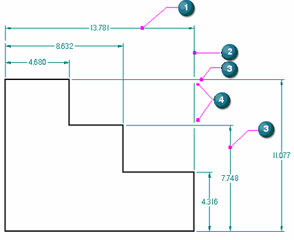

Adding breaks to projection lines
Dimensioned drawings can become cluttered and difficult to read when dimensions intersect one another. Using the Add Projection Line Break command, you can add breaks to projection lines on a selected dimension (1). The result is that break gaps (4) are inserted into the projection line (2) wherever it intersects another dimension (3). Visually, the break is represented by not drawing the projection line at the point of intersection.
-
(1) = selected dimension
-
(2) = projection line (broken)
-
(3) = intersecting dimensions (unbroken)
-
(4) = break gaps

Formatting break lines
The purpose of the projection line gap is to add visible white space and improve legibility. You can increase or decrease the size of the gap using the Break option on the Lines and Coordinate tab (Dimension Properties dialog box).
To add a break around dimension text that intersects other dimensions, use the Fill text with background color option on the Text page (Dimension properties dialog box).
More about break lines
-
Dimension projection lines that you break retain their setting during view updates, and also when you reposition the dimension text or lines for aesthetic reasons.
-
You can cut, copy, and paste a dimension with projection line break gaps as long as you select both the breaking and the broken dimensions along with the geometry.
-
You can remove dimension line breaks using the Remove Projection Line Break command.